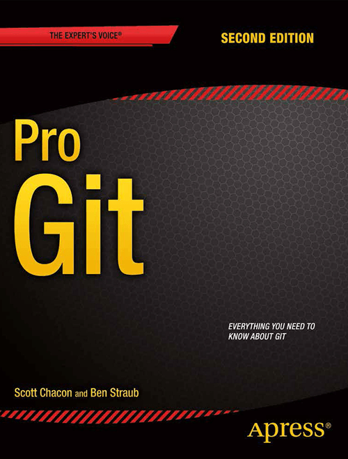

Git Notes
Notes from the Pro Git book found here: Git - Book

Git config
[path]/etc/gitconfig- System-wide git config
- Use
git config --system
~/.gitconfigor~/.config/git/config- User git config
- Use
git config --global
.git/config- Config just for the repo
- Use
git configorgit config --local
Local options override global options override system options
List all your options with git config --list --show-origin. This also conveniently shows the files where the options are stored.
Set one-time options
Identity options
git config --global user.name <e.g., Github username>
git config --global user.email <e.g., Github email>Default editor
git config --global core.editor nvimDefault branch name
git config --global init.defaultBranch mainHelp pages
git help <verb>
git <verb> --help
man git-<verb>Creating a new repo
Turn a local directory into a repo
Init
cd <directory>
git initAdd some files (i.e., stage some files for committing)
git add -A # add all files
git add . # add all files (if you're at root)
git add *.qmd # add with a globMake an initial commit
git commit -m "initial commmit"Clone an existing repo
# Clone into the current directory
git clone <url/path>
# Clone into the current directory with specific name
git clone <url/path> <name_of_dir>Commands
git help |
Help for a command |
git status |
Check status of repo |
git status -sgit status --short |
Check status (short) |
git add |
Add files to staging |
git diff |
Show changes in unstaged |
git diff -stagedgit diff -cached |
Show changes in staged |
git difftoolgit difftool --tool-help |
Use software to show diffs |
git log |
Show commit history |
git log --pretty=oneline |
Compact commit history with just messages |
git log --pretty=oneline --graph |
Also shows branch and merge history |
git log --since=2.weeks |
Show log only in last two weeks |
git commit |
Commit staged and open editor for commit message |
git commit -m <message> |
Commit staged and add message inline |
git commit -v |
Add diff into the commit message editor |
git commit -a |
Automatically stage all files that were already tracked before committing (I assume this won’t stage files that were previously untracked) |
git add
- When you
git add <file.ext>, THAT version will be added for staging, but further modifications will not be staged. Rungit addagain to stage any subsequent modifications to the file.
.gitignore
Use file .gitignore
- Blank lines or lines starting with
#are ignored - Prepending lines with
/avoids recursion - Appending lines with
/indicates directories
*.[oa] |
Ignore files ending in .o or .a |
*~ |
Ignore files ending in ~ (many temporary files) |
!*.txt |
Ignore files NOT ending with .txt |
temp*!temp1.text |
Do not track files starting with tempBut do specifically track this file |
/TODO.txt |
Ignore TODO.txt in current directory, but not subdir/TODO.txt |
lib/ |
Ignore ANY directories named lib |
assets/**/*.png |
Ignore .png files in assets or any of its subdirectories |
.gitignoreexamples: GitHub - github/gitignore: A collection of useful .gitignore templates- Multiple
.gitignorefiles are possible, seeman gitignore
Removing files (git rm)
- Option 1: Using
git rm <file>will remove the file and also add it to the “Changes to be committed” (i.e., the removal added to the staging area) - Option 2: If you remove a tracked file manually, it will show as as “Changes not staged for commit”. Deleting in VSCode will allow you to stage this deletion in the GUI if you didn’t use
git rmwhen deleting.
If a file has been modified or added to the stage area, use git rm -f to force the deletion. (Safety feature to avoid deleting a modified/staged file).
Unstage a file (git rm –cached)
git rm --cached <file> = KEEP the file, but remove it from staging area (e.g., forgot to add it to .gitignore but you staged it)
Rename a file
Option 1
git mv file_old file_newOption 2
mv file_old file_new
git rm file_old
git add file_newGit will implicitly detect the rename anyway.
A rename only seems to show a rename in git status.
A rename and a modification seems to show a deleted file and then a new file? Not sure how this affects the history or what can be gleamed. E.g. in VSCode GUI will it show the rename and previous history of a file? Seems like it might be safer to not commit a rename and a modification in the same commit for important files
Undoing
Undo commit (git commit –amend)
Use when you’ve already made a commit and want to make a change (e.g., change the commit message, add a file you forgot, etc.). This will entirely change the commit.
E.g.,
git commit -m "message"
git add <new_file>
# One of:
git commit --amend # I think it keeps old commit message?
git commit --amend -m "message_new"Unstage a file (git reset)
# Both in staging area
git add file1
git add file2
# Unstage file2
git reset HEAD file2Unstage all staged files (keeps any modifications in the working directory). This is a “mixed reset”.
# equivalent
git reset HEAD
git resetgit reset
(Section to be updated in later chapters)
To see where HEAD is pointing, use git log, e.g,
git log
git log -n 1
git log --pretty=oneline --graphCommands
git resetgit reset HEAD |
Unstage staged file for the commit at HEAD, keep any changes in the working directory |
git reset --soft <commit> |
Reset the HEAD to a specific commit, but leave any changes in working directory |
git reset <commit> |
Reset HEAD to specific commit, leave any changes in working directory, unstage changes |
git reset --hard <commit> |
Reset HEAD to specific commit, unstage changes, discards all changes in working directory |
Unmodify a file (git checkout –)
For untracked but modified files, discard changes (irreversibly) with:
git checkout -- <file>Undoing with git restore (easier)
git restore introduced with git v.2.23.0
git restore --staged <file> |
Unstage a file |
git restore --staged . |
Unstage all files under current working directory |
git restore <file> |
Discard changes to a modified file (irreversibly) |
git restore . |
Discard changes to all modified files(?) (irreversibly) |
Remotes
Get info on remotes
git remote |
Show shortnames of remotes |
git remote -v |
Show shortnames + URLs for each remote |
git remote add <shortname> <url> |
Add new remote repository |
When you git clone a repo, this will automatically add that repo to your remotes under the shortname origin
Fetch/pull from remotes
git fetch <shortname>
- Fetch all info from a remote, e.g.
<shortname>/mainor<shortname>/<branch_name>will be available to merge into another branch, checkout to a local branch, etc.
git fetch origin
- Fetch any new work from origin that has been pushed to the server since you last cloned or last fetched
- This will only download the data to the local repo, it does not automatically merge it with any work you’ve done or modify your current work. You must merge it into your work.
- If current branch “tracks” a remote branch, use
git pullto automatically fetch the remote branch and then merge it into your current branch git cloneautomatically sets your local main/master branch to track the remote main/master branchgit pull“generally fetches data from the server you originally cloned from and automatically tries to merge it into the code you’re currently working on”
- If current branch “tracks” a remote branch, use
Quote from book:
From Git version 2.27 onward, git pull will give a warning if the pull.rebase variable is not set. Git will keep warning you until you set the variable.
If you want the default behavior of Git (fast-forward if possible, else create a merge commit):
git config --global pull.rebase "false"If you want to rebase when pulling:
git config --global pull.rebase "true”
Push to remote (git push)
git push <remote> <branch>
git push <origin> <my_branch>
- Push your branch with shortname
my_branchto the remote with the shortnameorigin
git push origin main
- Push your main branch to the remote shortnamed “origin”
- If two people have cloned the repo and then push upstream, the second push would be rejected. The second person would have to fetch their work first, incorporate it, and then push.
(TBC… work in progress)